# generic multi-variable RK4 (same as Part 3A)
RK4_generic <- function(derivs, X0, t.total, dt, ...) {
t_all <- seq(0, t.total, by = dt); n_all <- length(t_all)
X_all <- matrix(0, n_all, length(X0)); X_all[1, ] <- X0
for (i in 1:(n_all - 1)) {
t0 <- t_all[i]
k1 <- dt * derivs(t0, X_all[i, ], ...)
k2 <- dt * derivs(t0 + dt / 2, X_all[i, ] + k1 / 2, ...)
k3 <- dt * derivs(t0 + dt / 2, X_all[i, ] + k2 / 2, ...)
k4 <- dt * derivs(t0 + dt, X_all[i, ] + k3, ...)
X_all[i + 1, ] <- X_all[i, ] + (k1 + 2 * k2 + 2 * k3 + k4) / 6
}
cbind(t_all, X_all)
}3H. Multi-component systems
The phase-plane tools of Part 3 extend naturally to circuits with more than two genes. This chapter works through four systems of growing size: a two-gene negative-feedback loop that spirals, the two-gene toggle switch, a three-gene repressilator that oscillates on a limit cycle, and a fifty-species ecological model. The same generic RK4 integrator handles all of them; only the derivative function changes.
3H.1 RK4 for any number of components
The RK4_generic routine from Part 3A already works for any number of variables: it only requires that the derivative function return a vector the same length as the state X0. Nothing about the integrator itself is two-dimensional.
NoteRecipe 3H.1.1
Objective. Integrate a system with any number of components using a single RK4 routine.
Model. Any autonomous system of ODEs dX/dt = f(X), where the state X and the derivative f(X) are vectors of the same length.
Method. The generic RK4_generic from Part 3A, unchanged; it works whenever the derivative function returns a vector the same length as the state.
Test. Apply it to the two-, three-, and many-gene systems of this chapter.
Show. The integrated trajectories for the two-, three-, and many-gene systems.
Verification. The same integrator handles each system correctly with no modification.
R implementation
Python implementation
import numpy as np
import matplotlib.pyplot as plt
# generic multi-variable RK4 (same as Part 3A)
def RK4_generic(derivs, X0, t_total, dt, **kw):
t_all = np.arange(0, t_total + dt, dt); n = len(t_all)
X_all = np.zeros((n, len(X0))); X_all[0] = X0
for i in range(n - 1):
t0 = t_all[i]
k1 = dt * np.array(derivs(t0, X_all[i], **kw))
k2 = dt * np.array(derivs(t0 + dt / 2, X_all[i] + k1 / 2, **kw))
k3 = dt * np.array(derivs(t0 + dt / 2, X_all[i] + k2 / 2, **kw))
k4 = dt * np.array(derivs(t0 + dt, X_all[i] + k3, **kw))
X_all[i + 1] = X_all[i] + (k1 + 2 * k2 + 2 * k3 + k4) / 6
return np.column_stack((t_all, X_all))3H.2 A two-gene negative-feedback loop
Here \(X\) activates \(Y\) and \(Y\) represses \(X\), a negative-feedback loop.

After nondimensionalization the dynamics are
\[\begin{equation} \begin{cases} \dfrac{dx}{dt} = \dfrac{g}{1 + y^3} - x \\[2mm] \dfrac{dy}{dt} = \dfrac{h x^3}{1 + x^3} - y \end{cases} \tag{1} \end{equation}\]
with maximum production rates \(g\) and \(h\). We set \(g = h = 10\). Drawing the unit vector field and overlaying trajectories from ten random starts shows every trajectory spiraling inward to a single steady state: the negative feedback produces damped oscillations.
NoteRecipe 3H.2.1
Objective. Simulate a two-gene negative-feedback loop (X activates Y, Y represses X).
Model. A two-gene negative-feedback loop in nondimensional form, with Hill coefficient 3 and unit degradation: dx/dt = g/(1 + y^3) - x, dy/dt = h*x^3/(1 + x^3) - y.
Method. Integrate the nondimensionalized system with the generic RK4.
Test. g = 10, h = 10.
Show. A phase-plane plot of trajectories spiraling into the single steady state.
Verification. Trajectories converge to a single stable steady state, spiraling in.
R implementation
library(ggplot2)
derivs_neg <- function(t, Xs, g, h) {
x <- Xs[1]; y <- Xs[2]
c(g / (1 + y^3) - x, h * x^3 / (1 + x^3) - y)
}
g <- 10; h <- 10
grid <- expand.grid(X = seq(0, 3, 0.3), Y = seq(0, 5, 0.5))
vfu <- t(apply(grid, 1, function(Xs) {
v <- derivs_neg(0, Xs, g, h); c(Xs, v / sqrt(sum(v^2)))
}))
vfu <- as.data.frame(vfu); colnames(vfu) <- c("X", "Y", "dX", "dY")
p1 <- ggplot(vfu, aes(X, Y)) +
geom_segment(aes(xend = X + 0.2 * dX, yend = Y + 0.2 * dY),
arrow = arrow(length = unit(0.05, "in")))
p1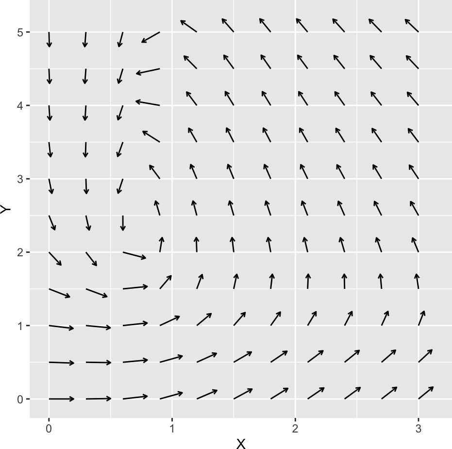
set.seed(77)
X_init_all <- matrix(runif(20, 0, 2), ncol = 2) # 10 random initial conditions
for (i in seq_len(nrow(X_init_all))) {
r <- as.data.frame(RK4_generic(derivs_neg, X_init_all[i, ], 100, 0.01, g = g, h = h))
colnames(r) <- c("t", "X", "Y")
p1 <- p1 + geom_path(data = r, aes(X, Y), colour = i + 1, linewidth = 1)
}
p1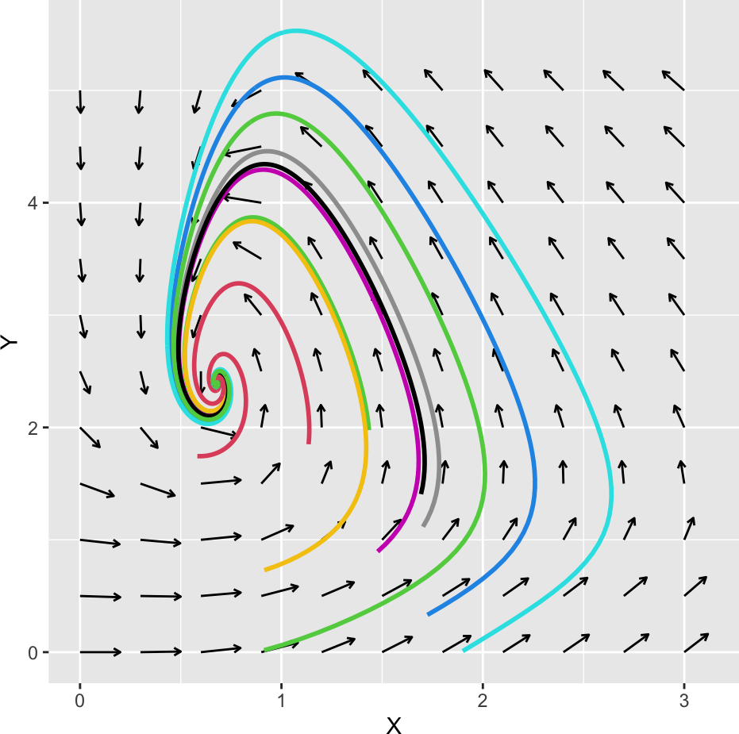
Python implementation
def derivs_neg(t, Xs, g, h):
x, y = Xs
return [g / (1 + y**3) - x, h * x**3 / (1 + x**3) - y]
g, h = 10, 10
X_ax = np.arange(0, 3.1, 0.3); Y_ax = np.arange(0, 5.1, 0.5)
grid = np.array(np.meshgrid(X_ax, Y_ax)).T.reshape(-1, 2)
for X, Y in grid:
v = np.array(derivs_neg(0, (X, Y), g, h)); v = 0.2 * v / np.sqrt(v @ v)
plt.arrow(X, Y, v[0], v[1], head_width=0.06, ec="black")
plt.xlabel("X"); plt.ylabel("Y")
plt.xlim(0, 3); plt.ylim(0, 5); plt.show()(0.0, 3.0)
(0.0, 5.0)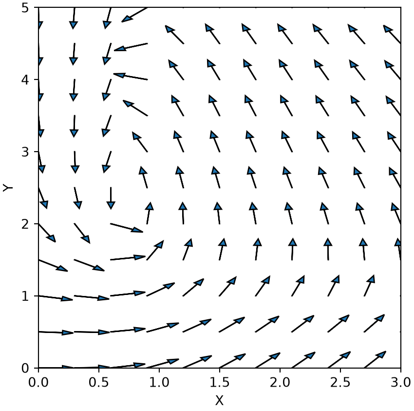
for X, Y in grid: # redraw the vector field
v = np.array(derivs_neg(0, (X, Y), g, h)); v = 0.2 * v / np.sqrt(v @ v)
plt.arrow(X, Y, v[0], v[1], head_width=0.06, ec="black")
np.random.seed(77)
for X0 in np.random.uniform(0, 2, (10, 2)): # 10 random initial conditions
r = RK4_generic(derivs_neg, X0, 100, 0.01, g=g, h=h)
plt.plot(r[:, 1], r[:, 2], lw=1)
plt.xlabel("X"); plt.ylabel("Y")
plt.xlim(0, 3); plt.ylim(0, 5); plt.show()(0.0, 3.0)
(0.0, 5.0)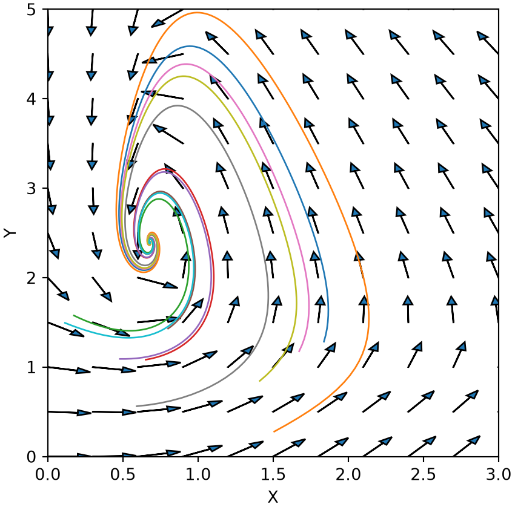
3H.3 A reusable phase-plane function
The two steps just used, drawing the unit vector field and overlaying a few simulated trajectories, recur for every 2D system, so it pays to package them into one function. The routine below takes a derivative function and plotting ranges and returns the combined phase portrait; extra parameters are forwarded to the derivative function.
R implementation
plot_phase_plane <- function(func, xrange, yrange, ngrids = 11, vscale = 1,
rseed = 77, nsim = 5, xrange_init, yrange_init,
dt = 0.01, t.total = 100, linewidth = 1, ...) {
X_all <- seq(xrange[1], xrange[2], length.out = ngrids)
Y_all <- seq(yrange[1], yrange[2], length.out = ngrids)
vfu <- t(apply(expand.grid(X = X_all, Y = Y_all), 1, function(Xs) {
v <- func(0, Xs, ...); c(Xs, v / sqrt(sum(v^2)))
}))
vfu <- as.data.frame(vfu); colnames(vfu) <- c("X", "Y", "dX", "dY")
p <- ggplot(vfu, aes(X, Y)) +
geom_segment(aes(xend = X + vscale * dX, yend = Y + vscale * dY),
arrow = arrow(length = unit(0.05, "in"))) +
coord_fixed(xlim = xrange, ylim = yrange)
set.seed(rseed)
X_init_all <- cbind(runif(nsim, xrange_init[1], xrange_init[2]),
runif(nsim, yrange_init[1], yrange_init[2]))
for (i in seq_len(nsim)) {
r <- as.data.frame(RK4_generic(func, X_init_all[i, ], t.total, dt, ...))
colnames(r) <- c("t", "X", "Y")
p <- p + geom_path(data = r, aes(X, Y), colour = i + 1, linewidth = linewidth)
}
p
}Python implementation
def plot_phase_plane(func, xrange, yrange, ngrids=11, vscale=1, rseed=77, nsim=5,
xrange_init=(0, 1), yrange_init=(0, 1), dt=0.01, t_total=100, **kw):
X_ax = np.linspace(xrange[0], xrange[1], ngrids)
Y_ax = np.linspace(yrange[0], yrange[1], ngrids)
grid = np.array(np.meshgrid(X_ax, Y_ax)).T.reshape(-1, 2)
head = (xrange[1] - xrange[0]) / 80
for X, Y in grid:
v = np.array(func(0, (X, Y), **kw)); v = vscale * v / np.sqrt(v @ v)
plt.arrow(X, Y, v[0], v[1], head_width=head, ec="black")
np.random.seed(rseed)
for _ in range(nsim):
X0 = [np.random.uniform(*xrange_init), np.random.uniform(*yrange_init)]
r = RK4_generic(func, X0, t_total, dt, **kw)
plt.plot(r[:, 1], r[:, 2], lw=1)
plt.gca().set_aspect("equal"); plt.xlabel("X"); plt.ylabel("Y")
plt.xlim(xrange); plt.ylim(yrange); plt.show()3H.4 The toggle switch (double-negative feedback)
The toggle switch of Part 3A has \(X\) and \(Y\) repressing each other, a double-negative loop.

Its nondimensionalized form is
\[\begin{equation} \begin{cases} \dfrac{dx}{dt} = \dfrac{g}{1 + y^3} - x \\[2mm] \dfrac{dy}{dt} = \dfrac{h}{1 + x^3} - y \end{cases} \tag{2} \end{equation}\]
With \(g = h = 5\), the reusable function draws the whole phase portrait in one call. The trajectories separate into two basins and settle on the two stable states, the bistability we analyzed before.
NoteRecipe 3H.4.1
Objective. Simulate the toggle switch (X and Y repress each other) in nondimensionalized form.
Model. The toggle switch in nondimensional form, Hill coefficient 3 and unit degradation: dx/dt = g/(1 + y^3) - x, dy/dt = h/(1 + x^3) - y.
Method. Integrate the system with the generic RK4.
Test. g = 5, h = 5, from several initial conditions.
Show. A phase-plane plot of trajectories reaching one of the two stable steady states.
Verification. There are two stable steady states (x-high/y-low and x-low/y-high); which one a trajectory reaches depends on its initial condition.
R implementation
derivs_ts <- function(t, Xs, g, h) {
x <- Xs[1]; y <- Xs[2]
c(g / (1 + y^3) - x, h / (1 + x^3) - y)
}
plot_phase_plane(derivs_ts, xrange = c(0, 6), yrange = c(0, 6), ngrids = 11,
vscale = 0.3, nsim = 10, xrange_init = c(0, 5), yrange_init = c(0, 5),
g = 5, h = 5)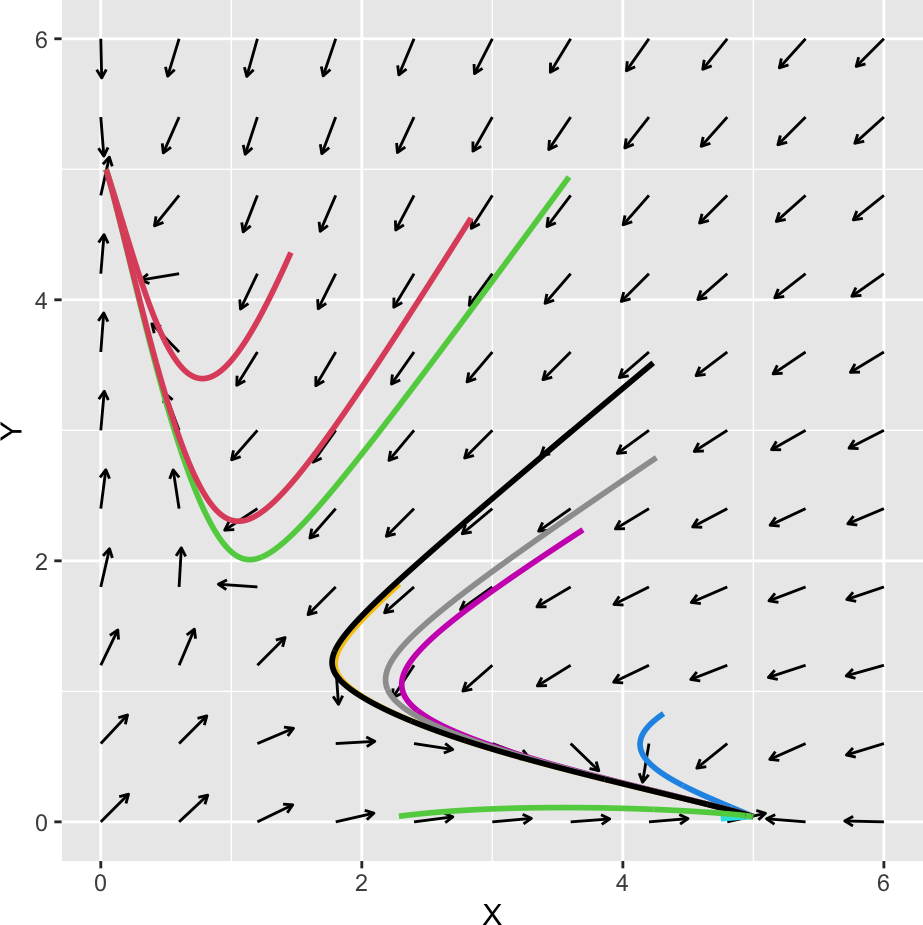
Python implementation
def derivs_ts(t, Xs, g, h):
x, y = Xs
return [g / (1 + y**3) - x, h / (1 + x**3) - y]
plot_phase_plane(derivs_ts, (0, 6), (0, 6), ngrids=11, vscale=0.3, nsim=10,
xrange_init=(0, 5), yrange_init=(0, 5), g=5, h=5)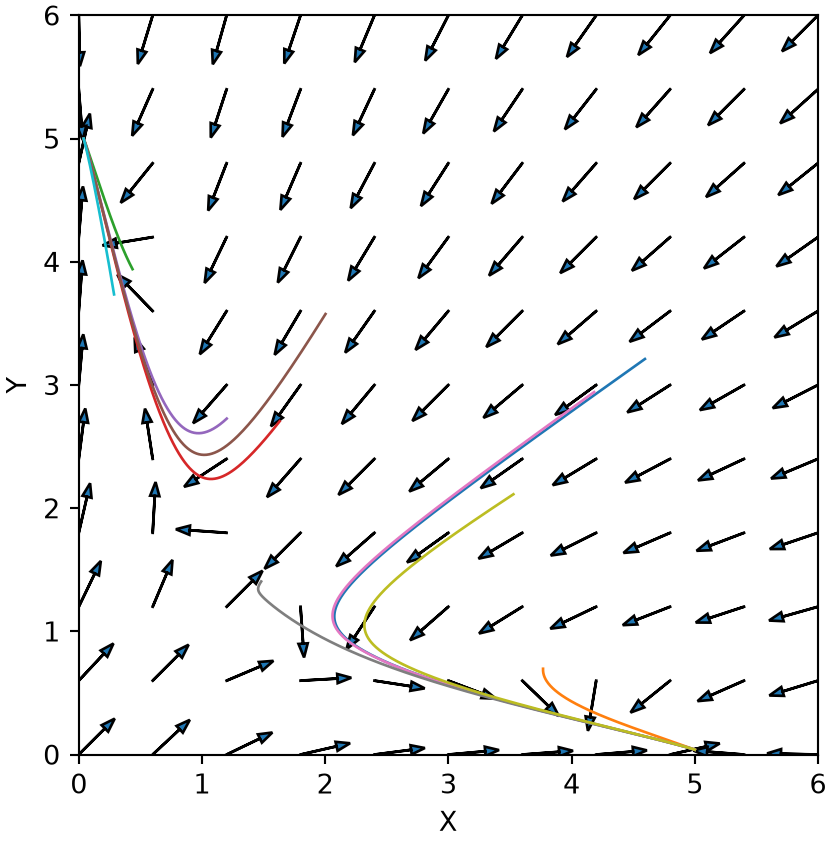
3H.5 A three-gene repressilator
A repressilator is a ring of three repressions: \(X\) represses \(Y\), \(Y\) represses \(Z\), and \(Z\) represses \(X\) (Elowitz and Leibler 2000).
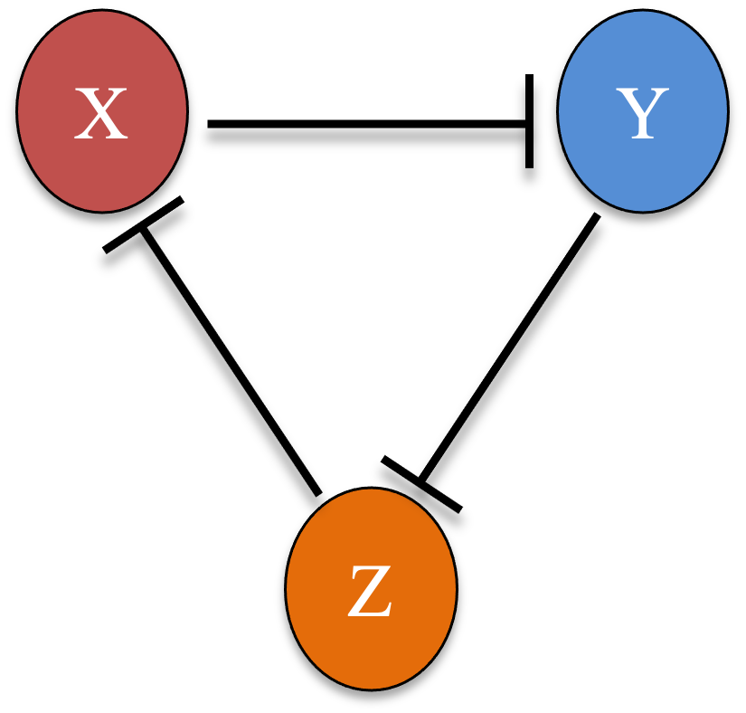
\[\begin{equation} \begin{cases} \dfrac{dx}{dt} = \dfrac{g}{1 + z^3} - x \\[2mm] \dfrac{dy}{dt} = \dfrac{h}{1 + x^3} - y \\[2mm] \dfrac{dz}{dt} = \dfrac{l}{1 + y^3} - z \end{cases} \tag{3} \end{equation}\]
This is a three-variable system, so we project it onto the \((X, Y)\) plane. For the background vector field we compute \((dX/dt, dY/dt)\) at each grid point assuming \(Z\) is at its quasi-steady state \(dZ/dt = 0\), i.e. \(z = l/(1 + y^3)\). The trajectories, in contrast, are simulated with the full three-variable system and then projected. With \(g = h = l = 5\) the trajectories converge to a closed loop, a limit cycle: the repressilator is a genetic oscillator.
NoteRecipe 3H.5.1
Objective. Simulate a three-gene repressilator (a ring of three repressions) and see sustained oscillations.
Model. A ring of three mutual repressions in nondimensional form (X repressed by Z, Y by X, Z by Y), Hill coefficient 3 and unit degradation: dx/dt = g/(1 + z^3) - x, dy/dt = h/(1 + x^3) - y, dz/dt = l/(1 + y^3) - z.
Method. Integrate the three-variable ring with the generic RK4.
Test. g = h = l = 5.
Show. A time-series plot of the three genes oscillating in turn.
Verification. The three genes settle into a sustained limit-cycle oscillation, each peaking in turn in a fixed order.
R implementation
# full 3-variable repressilator
derivs_rep <- function(t, Xs, g) {
x <- Xs[1]; y <- Xs[2]; z <- Xs[3]
c(g[1] / (1 + z^3) - x, g[2] / (1 + x^3) - y, g[3] / (1 + y^3) - z)
}
# projection to (X, Y) with Z at quasi-steady state (dZ/dt = 0)
derivs_rep_xy <- function(t, Xs, g) {
x <- Xs[1]; y <- Xs[2]; z <- g[3] / (1 + y^3)
c(g[1] / (1 + z^3) - x, g[2] / (1 + x^3) - y)
}
g <- c(5, 5, 5)
grid <- expand.grid(X = seq(0, 4, 0.4), Y = seq(0, 4, 0.4))
vfu <- t(apply(grid, 1, function(Xs) {
v <- derivs_rep_xy(0, Xs, g); c(Xs, v / sqrt(sum(v^2)))
}))
vfu <- as.data.frame(vfu); colnames(vfu) <- c("X", "Y", "dX", "dY")
p1 <- ggplot(vfu, aes(X, Y)) +
geom_segment(aes(xend = X + 0.3 * dX, yend = Y + 0.3 * dY),
arrow = arrow(length = unit(0.05, "in"))) +
coord_fixed()
set.seed(71)
X_init_all <- matrix(runif(12, 0, 4), ncol = 3) # 4 random 3D initial conditions
for (i in seq_len(nrow(X_init_all))) {
r <- as.data.frame(RK4_generic(derivs_rep, X_init_all[i, ], 50, 0.01, g = g))
colnames(r) <- c("t", "X", "Y", "Z")
p1 <- p1 + geom_path(data = r, aes(X, Y), colour = i + 1, linewidth = 0.5)
}
p1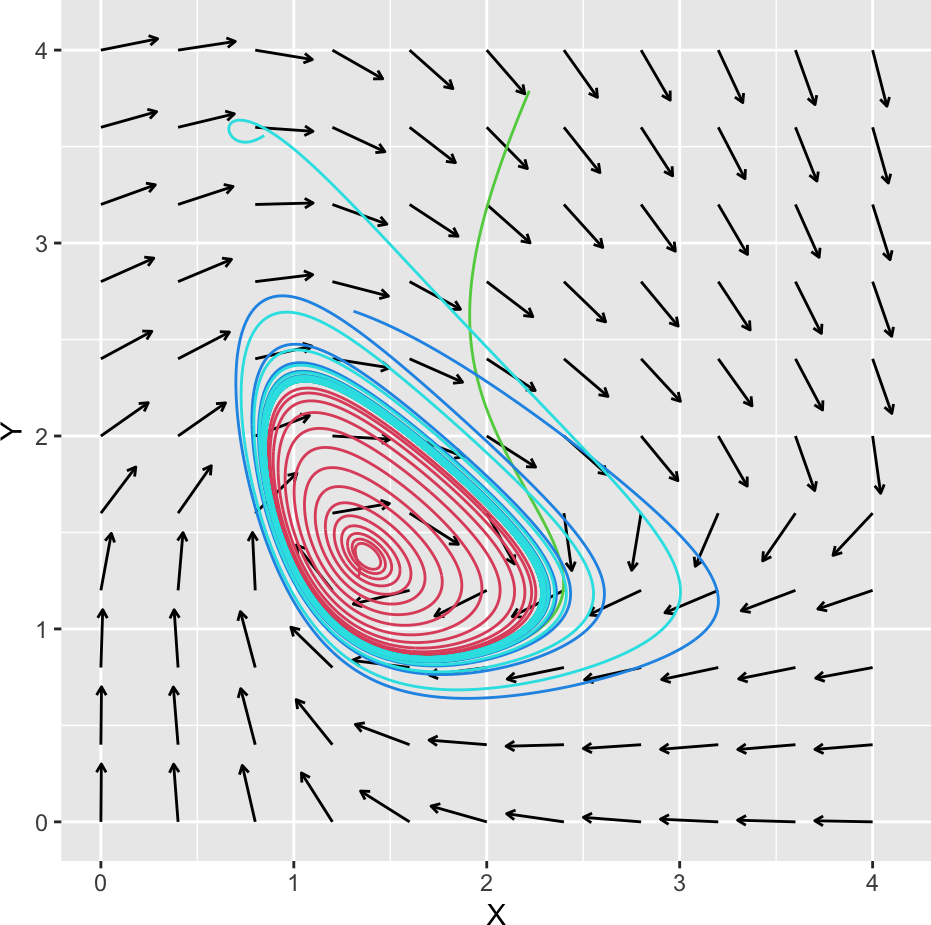
Python implementation
# full 3-variable repressilator
def derivs_rep(t, Xs, g):
x, y, z = Xs
return [g[0] / (1 + z**3) - x, g[1] / (1 + x**3) - y, g[2] / (1 + y**3) - z]
# projection to (X, Y) with Z at quasi-steady state (dZ/dt = 0)
def derivs_rep_xy(t, Xs, g):
x, y = Xs; z = g[2] / (1 + y**3)
return [g[0] / (1 + z**3) - x, g[1] / (1 + x**3) - y]
g = np.array([5, 5, 5])
X_ax = np.arange(0, 4.1, 0.4); Y_ax = np.arange(0, 4.1, 0.4)
grid = np.array(np.meshgrid(X_ax, Y_ax)).T.reshape(-1, 2)
for X, Y in grid:
v = np.array(derivs_rep_xy(0, (X, Y), g)); v = 0.3 * v / np.sqrt(v @ v)
plt.arrow(X, Y, v[0], v[1], head_width=0.05, ec="black")
np.random.seed(71)
for X0 in np.random.uniform(0, 4, (4, 3)): # 4 random 3D initial conditions
r = RK4_generic(derivs_rep, X0, 50, 0.01, g=g)
plt.plot(r[:, 1], r[:, 2], lw=0.5)
plt.gca().set_aspect("equal"); plt.xlabel("X"); plt.ylabel("Y")
plt.xlim(0, 4); plt.ylim(0, 4); plt.show()(0.0, 4.0)
(0.0, 4.0)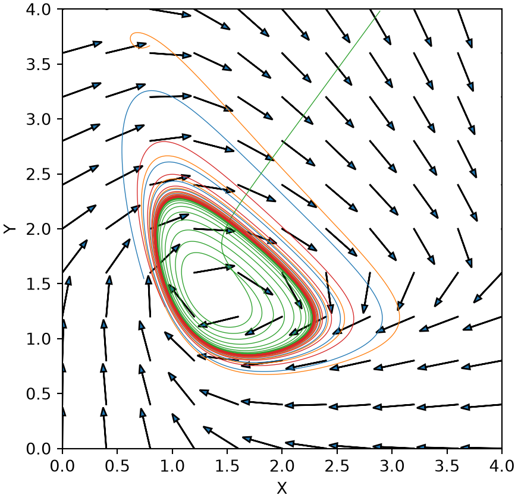
3H.6 A many-component system
Nothing limits the integrator to a handful of variables. As a large example we take a generalized Lotka-Volterra model of \(S\) interacting bacterial species, following Hu et al. (2022),
\[ \frac{dN_i}{dt} = N_i\Big(1 - \sum_{j=1}^{S} a_{ij} N_j\Big) + D , \]
where \(N_i\) is the abundance of species \(i\), \(a_{ij}\) is the inhibition of \(i\) by \(j\), and \(D = 10^{-6}\) is a small dispersal (immigration) rate. The self-terms are \(a_{ii} = 1\), and the off-diagonal \(a_{ij}\) are drawn uniformly from \((0, 2a)\), where \(a\) is the mean interaction strength. Sweeping \(a\) moves the community between qualitatively different regimes: at weak interaction it settles to stable coexistence, and at strong interaction it never settles, fluctuating persistently.
NoteRecipe 3H.6.1
Objective. Simulate a large system of many interacting species with the same integrator.
Model. A generalized Lotka-Volterra community of S species with a small immigration term, dN_i/dt = N_i*(1 - sum_j a_ij*N_j) + D, with self-interaction a_ii = 1 and random off-diagonal interactions a_ij.
Method. Build the interaction matrix, then integrate with the generic RK4.
Test. S = 50 species, dispersal D = 1e-6, off-diagonal a_ij drawn from Uniform(0, 2a) with mean interaction strength a = 0.08 (weak), 0.16, and 0.64 (strong).
Show. A time-series plot of the S species relaxing to steady state, some coexisting and some near zero.
Verification. The same RK4 routine scales to S variables, and the community relaxes to a steady state in which some species coexist while others fall to near-extinction.
R implementation
derivs_many <- function(t, Xs, A, D) Xs - Xs * (A %*% Xs) + D
sim <- function(S, a, D, t.total = 1000) {
A <- matrix(runif(S * S, 0, 2 * a), nrow = S); diag(A) <- 1
X0 <- rep(0.1, S)
results <- RK4_generic(derivs_many, X0, t.total, 0.01, A = A, D = D)
plot(NULL, xlab = "t", ylab = "N", xlim = c(1, t.total), ylim = c(1e-6, 1), log = "xy")
for (i in seq_len(S)) lines(results[, 1], results[, i + 1], col = i)
}
set.seed(3)
S <- 50; D <- 1e-6
sim(S, a = 0.08, D) # weak interaction: stable coexistence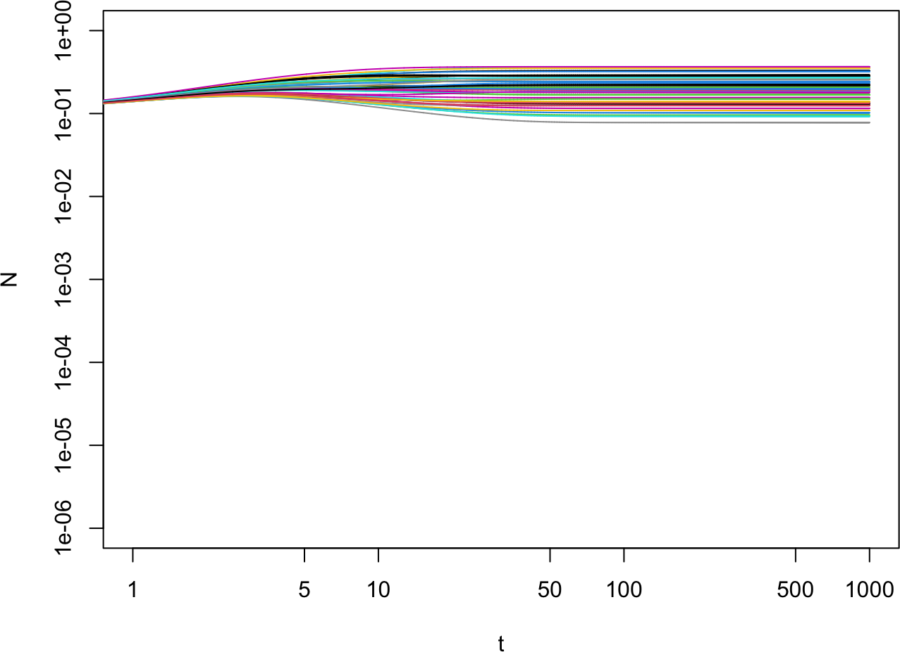
sim(S, a = 0.16, D) # intermediate interaction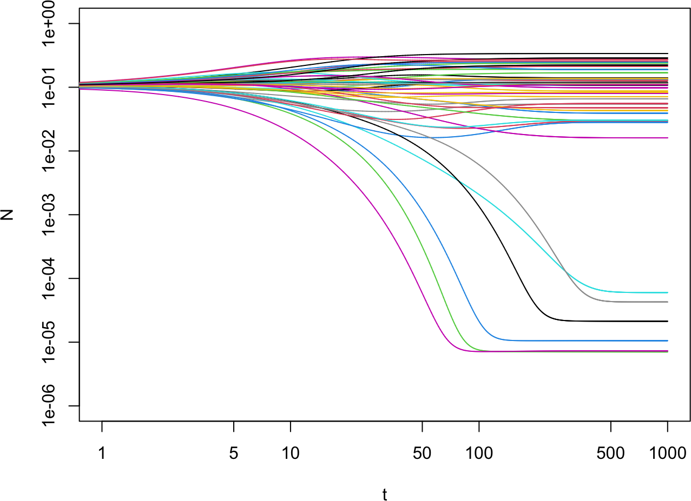
sim(S, a = 0.64, D) # strong interaction: persistent fluctuations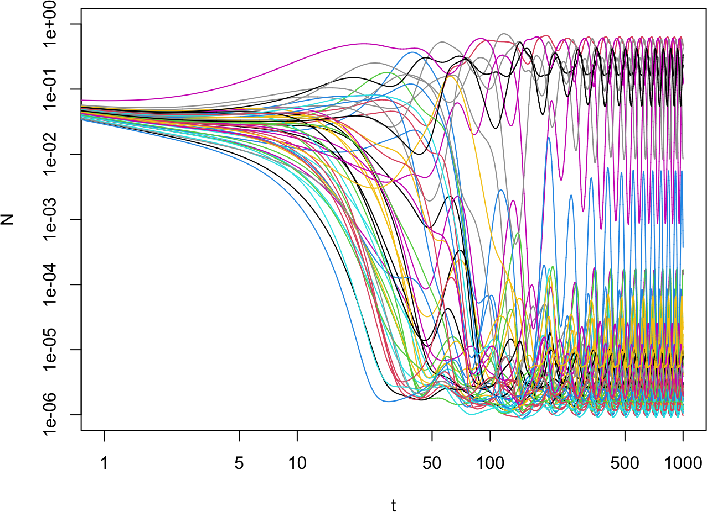
Python implementation
def derivs_many(t, Xs, A, D):
return Xs - Xs * (A @ Xs) + D
def sim(S, a, D, t_total=1000):
A = np.random.uniform(0, 2 * a, (S, S)); np.fill_diagonal(A, 1)
X0 = np.full(S, 0.1)
results = RK4_generic(derivs_many, X0, t_total, 0.01, A=A, D=D)
for i in range(S):
plt.plot(results[:, 0], results[:, i + 1])
plt.xscale("log"); plt.yscale("log"); plt.xlabel("t"); plt.ylabel("N")
plt.xlim(1, t_total); plt.ylim(1e-6, 1); plt.show()
np.random.seed(3)
S, D = 50, 1e-6
sim(S, a=0.08, D=D) # weak interaction: stable coexistence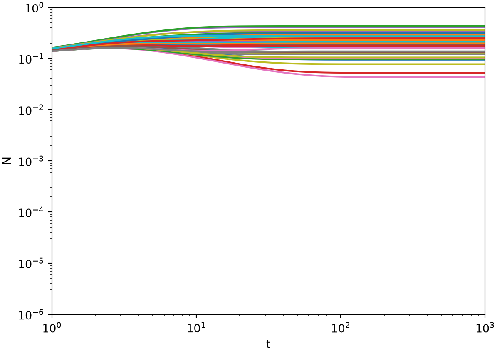
sim(S, a=0.16, D=D) # intermediate interaction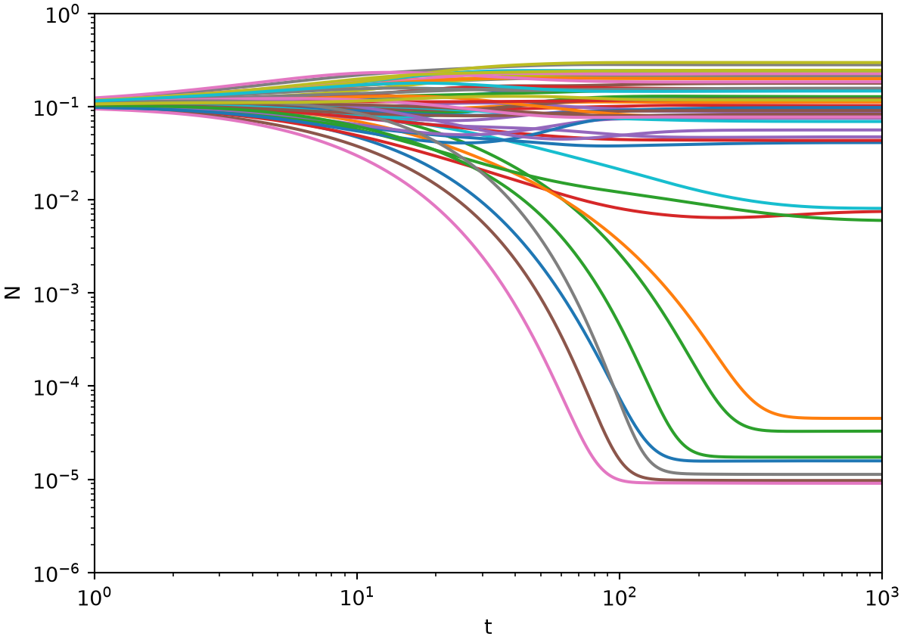
sim(S, a=0.64, D=D) # strong interaction: persistent fluctuations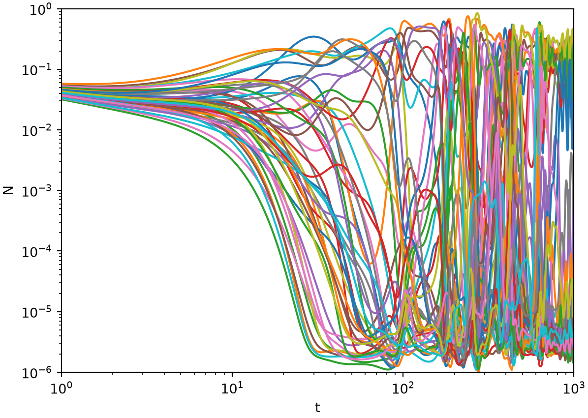
The three runs illustrate the “emergent phases” of Hu et al. (2022): as the mean interaction strength grows, a diverse community that would otherwise settle into a fixed composition instead keeps rearranging, with species abundances rising and falling indefinitely. The R and Python runs use independent random interaction matrices, so the individual traces differ, but the qualitative shift from stable coexistence to persistent fluctuations is the same.